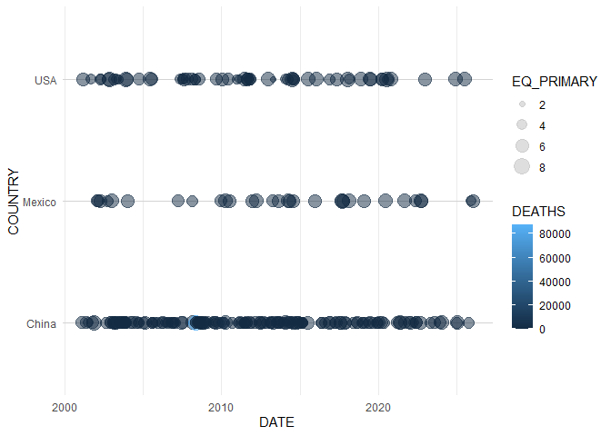
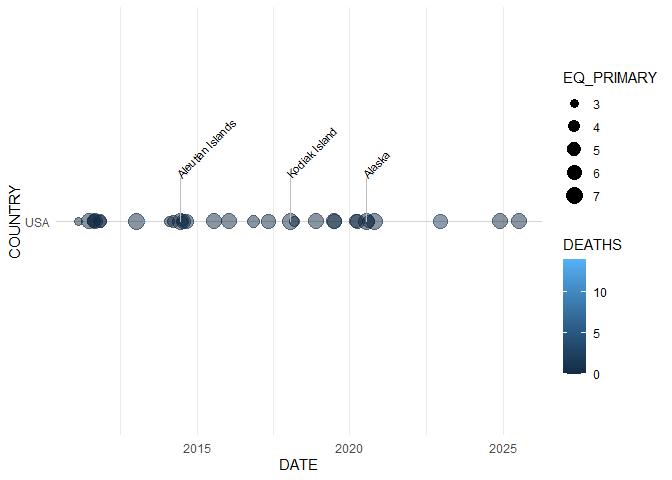
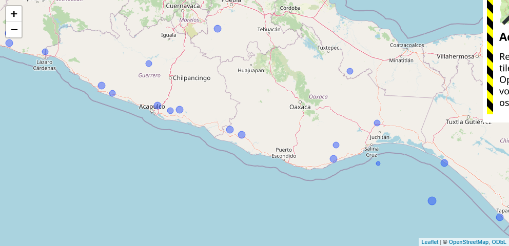

The noaaquakes package provides a suite of tools for reading, cleaning, and visualizing the NOAA Significant Earthquake Database. It includes specialized ggplot2 geometries for timelines and leaflet wrappers for interactive mapping.
Installation
You can install the development version of noaaquakes from GitHub with:
# install.packages("pak")
pak::pak("derneld/noaaquakes")Data Preparation
The package provides functions to import the raw NOAA TSV file and convert it into a tidy format suitable for analysis.
library(noaaquakes)
library(dplyr)
#>
#> Attaching package: 'dplyr'
#> The following objects are masked from 'package:stats':
#>
#> filter, lag
#> The following objects are masked from 'package:base':
#>
#> intersect, setdiff, setequal, union
# Find the correct path regardless of whether the package is installed or in development
file_path <- system.file("extdata", "earthquakes.tsv", package = "noaaquakes")
# If system.file returns empty (package not installed yet), point to the local file
if (file_path == "") {
file_path <- "inst/extdata/earthquakes.tsv"
}
raw_data <- eq_read_data(file_path)
#> Rows: 6663 Columns: 39
#> ── Column specification ────────────────────────────────────────────────────────
#> Delimiter: "\t"
#> chr (2): Search Parameters, Location Name
#> dbl (37): Year, Mo, Dy, Hr, Mn, Sec, Tsu, Vol, Latitude, Longitude, Focal De...
#>
#> ℹ Use `spec()` to retrieve the full column specification for this data.
#> ℹ Specify the column types or set `show_col_types = FALSE` to quiet this message.
clean_data <- eq_clean_data(raw_data)Visualizing Regional Earthquake Activity
The package introduces geom_timeline() to plot earthquakes on a horizontal time axis, with the ability to stratify by region (y-axis) and scale by magnitude or deaths.
library(ggplot2)
clean_data %>%
filter(COUNTRY %in% c("USA", "China", "Mexico"), Year > 2000) %>%
ggplot(aes(x = DATE, y = COUNTRY, color = DEATHS, size = EQ_PRIMARY)) +
geom_timeline() +
theme_minimal()
Adding Labels
You can use geom_timeline_label() to highlight the most significant events by magnitude.
clean_data %>%
filter(COUNTRY == "USA", Year > 2010) %>%
ggplot(aes(x = DATE, y = COUNTRY, color = DEATHS, size = EQ_PRIMARY)) +
geom_timeline() +
geom_timeline_label(aes(label = LOCATION_NAME, magnitude = EQ_PRIMARY), n_max = 3) +
theme_minimal()
Interactive Maps
The eq_map() function leverages leaflet to create interactive visualizations. You can generate custom HTML labels using eq_create_label() to show detailed information in pop-ups.
clean_data %>%
filter(COUNTRY == "Mexico" & Year > 2010) %>%
mutate(popup_text = eq_create_label(.)) %>%
eq_map(annot_col = "popup_text")